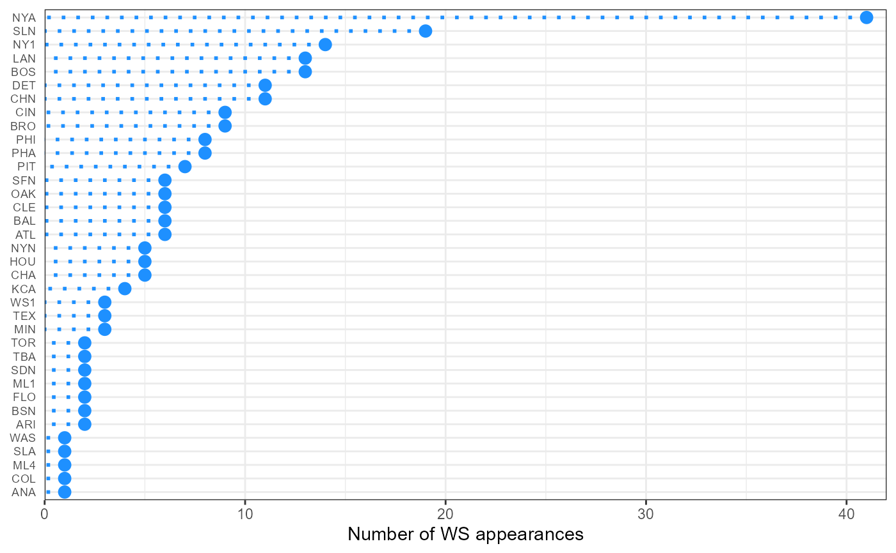

SeriesPost table
SeriesPost.RdPost season series information
Usage
data(SeriesPost)Format
A data frame with 389 observations on the following 9 variables.
yearIDYear
roundLevel of playoffs
teamIDwinnerTeam ID of the team that won the series; a factor
lgIDwinnerLeague ID of the team that won the series; a factor with levels
ALNLteamIDloserTeam ID of the team that lost the series; a factor
lgIDloserLeague ID of the team that lost the series; a factor with levels
ALNLwinsWins by team that won the series
lossesLosses by team that won the series
tiesTie games
Source
Lahman, S. (2025) Lahman's Baseball Database, 1871-2024, 2025 version, https://sabr.org/lahman-database/
Examples
data(SeriesPost)
# How many times has each team won the World Series?
# Notes:
# - the SeriesPost table includes an identifier for the
# team (teamID), but not the franchise (e.g. the Brooklyn Dodgers
# [BRO] and Los Angeles Dodgers [LAN] are counted separately)
#
# - the World Series was first played in 1903, but the
# Lahman data tables have the final round of the earlier
# playoffs labelled "WS", so it is necessary to
# filter the SeriesPost table to exclude years prior to 1903.
# using the dplyr data manipulation package
library("dplyr")
library("tidyr")
library("ggplot2")
## WS winners, arranged in descending order of titles won
ws_winner_table <- SeriesPost %>%
filter(yearID > "1902", round == "WS") %>%
group_by(teamIDwinner) %>%
summarise(wincount = n()) %>%
arrange(desc(wincount))
ws_winner_table
#> # A tibble: 31 × 2
#> teamIDwinner wincount
#> <fct> <int>
#> 1 NYA 27
#> 2 SLN 11
#> 3 BOS 9
#> 4 LAN 6
#> 5 CIN 5
#> 6 NY1 5
#> 7 PHA 5
#> 8 PIT 5
#> 9 DET 4
#> 10 OAK 4
#> # ℹ 21 more rows
## Expanded form of World Series team data in modern era
ws <- SeriesPost %>%
filter(yearID >= 1903 & round == "WS") %>%
select(-ties, -round) %>%
mutate(lgIDloser = droplevels(lgIDloser),
lgIDwinner = droplevels(lgIDwinner))
# Bar chart of length of series (# games played)
# 1903, 1919 and 1921 had eight games
ggplot(ws, aes(x = wins + losses)) +
geom_bar(fill = "dodgerblue") +
labs(x = "Number of games", y = "Frequency")
# Last year the Cubs appeared in the WS
ws %>%
filter(teamIDwinner == "CHN" | teamIDloser == "CHN") %>%
summarise(max(yearID))
#> max(yearID)
#> 1 2016
# Dot chart of number of WS appearances by teamID
ws %>%
gather(wl, team, teamIDwinner, teamIDloser) %>%
count(team) %>%
arrange(desc(n)) %>%
ggplot(., aes(x = reorder(team, n), y = n)) +
theme_bw() +
geom_point(size = 3, color = "dodgerblue") +
geom_segment(aes(xend = reorder(team, n), yend = 0),
linetype = "dotted", color = "dodgerblue",
size = 1) +
labs(x = NULL, y = "Number of WS appearances") +
scale_y_continuous(expand = c(0, 0), limits = c(0, 42)) +
coord_flip() +
theme(axis.text.y = element_text(size = rel(0.8)),
axis.ticks.y = element_blank())
#> Warning: attributes are not identical across measure variables; they will be dropped

# Initial year of each round of championship series in modern era
SeriesPost %>%
filter(yearID >= 1903) %>% # modern WS started in 1903
group_by(round) %>%
summarise(first_year = min(yearID)) %>%
arrange(first_year)
#> # A tibble: 21 × 2
#> round first_year
#> <chr> <int>
#> 1 WS 1903
#> 2 ALCS 1969
#> 3 NLCS 1969
#> 4 AEDIV 1981
#> 5 AWDIV 1981
#> 6 NEDIV 1981
#> 7 NWDIV 1981
#> 8 ALDS1 1995
#> 9 ALDS2 1995
#> 10 NLDS1 1995
#> # ℹ 11 more rows
# Ditto, but with more information about each series played
SeriesPost %>%
filter(yearID >= 1903) %>%
group_by(round) %>%
arrange(yearID) %>%
do(head(., 1)) %>%
select(-lgIDwinner, -lgIDloser) %>%
arrange(yearID, round)
#> # A tibble: 21 × 7
#> # Groups: round [21]
#> yearID round teamIDwinner teamIDloser wins losses ties
#> <int> <chr> <fct> <fct> <int> <int> <int>
#> 1 1903 WS BOS PIT 5 3 0
#> 2 1969 ALCS BAL MIN 3 0 0
#> 3 1969 NLCS NYN ATL 3 0 0
#> 4 1981 AEDIV NYA ML4 3 2 0
#> 5 1981 AWDIV OAK KCA 3 0 0
#> 6 1981 NEDIV MON PHI 3 2 0
#> 7 1981 NWDIV LAN HOU 3 2 0
#> 8 1995 ALDS1 CLE BOS 3 0 0
#> 9 1995 ALDS2 SEA NYA 3 2 0
#> 10 1995 NLDS1 ATL COL 3 1 0
#> # ℹ 11 more rows